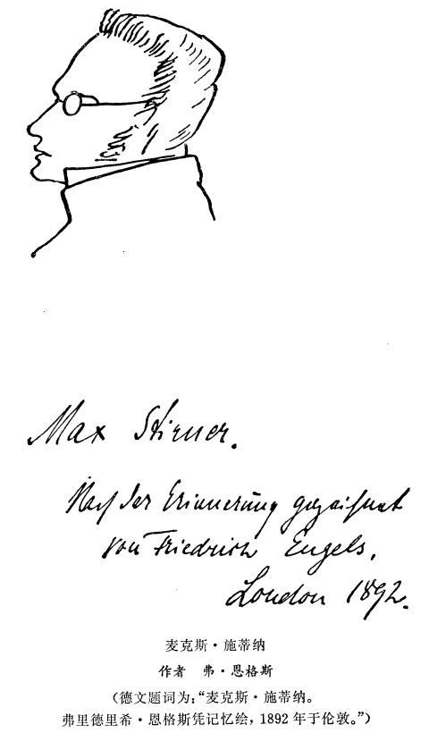

书信。1891年—1892年
21.致安东尼奥·拉布里奥拉
[副本]
1891年2月27日于伦敦
……很抱歉，我不能把关于施蒂纳的那份旧手稿交给麦凯先生处理。即使要出版，也得由我或我的遗嘱执行人负责。但我没有任何权利把未发表的、马克思参加写作的手稿交给第三者使用，即使有这样的权利，我也不会这样做。在这方面，我颇有特殊的经验。唯一的一份手稿，我在任何情况下都不会放手。另外，这部手稿有整整一卷，印出来将有施蒂纳的《唯一者》FN1那么厚，——而且保存得不好，有些残缺不全，尚待整理……
（弗里德里希·恩格斯）

脚 注
FN1 麦·施蒂纳《唯一者及其所有物》。——编者注
注 释
55 这是恩格斯一封信的片断，原信未保存下来；此信是恩格斯对安·拉布里奥拉1891年2月21日来信的答复。拉布里奥拉向恩格斯转达了德国无政府主义诗人麦凯（德国青年黑格尔派哲学家施蒂纳观点的狂热崇拜者及其著作的搜集者）提出的请求，他请求阅读马克思和恩格斯关于施蒂纳的一部未出版的手稿，即《德意志意识形态》。——第41页。